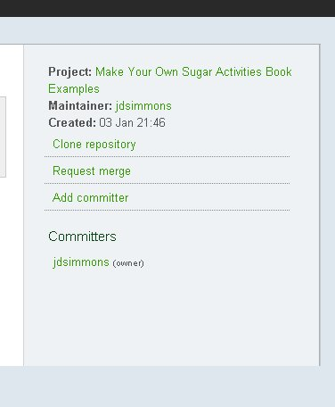
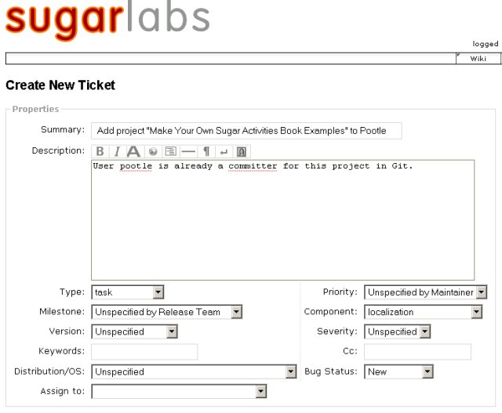
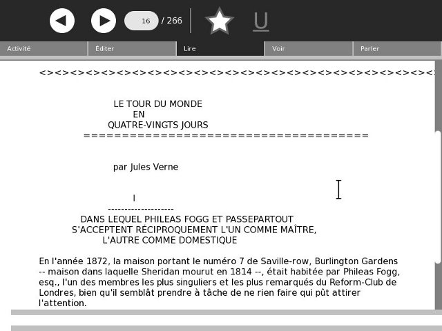

Going International With Pootle
Introduction
The goal of Sugar Labs and One Laptop Per Child is to educate all the children of the world, and we can't do that with Activities that are only available in one language. It is equally true that making separate versions of each Activity for every language is not going to work, and expecting Activity developers to be fluent in many languages is not realistic either. We need a way for Activity developers to be able to concentrate on creating Activities and for those who can translate to just do that. Fortunately, this is possible and the way it's done is by using gettext.
Getting Text With gettext
You should remember that our latest code example made use of an odd import:
from gettext import gettext as _
The "_()" function was used in statements like this:
self.back.set_tooltip(_('Back'))
At the time I explained that this odd looking function was used to translate the word "Back" into other languages, so that when someone looks at the Back button's tool tip he'll see the text in his own language. I also said that if it was not possible to translate this text the user would see the word "Back" untranslated. In this chapter we'll learn more about how this works and what we have to do to support the volunteers who translate these text strings into other languages.
Going To Pot
Assuming that every string of text a user might be shown by our Activity is passed through "_()" the next step is to generate a pot file. You can do this by running setup.py with a special option:
./setup.py genpot
This creates a directory called po and puts a file ActivityName.pot in that directory. In the case of our example project ActivityName is ReadEtextsII. This is the contents of that file:
# SOME DESCRIPTIVE TITLE. # Copyright (C) YEAR THE PACKAGE'S COPYRIGHT HOLDER # This file is distributed under the same license as the PACKAGE package. # FIRST AUTHOR <EMAIL@ADDRESS>, YEAR. # #, fuzzy msgid "" msgstr "" "Project-Id-Version: PACKAGE VERSION\n" "Report-Msgid-Bugs-To: \n" "POT-Creation-Date: 2010-01-06 18:31-0600\n" "PO-Revision-Date: YEAR-MO-DA HO:MI+ZONE\n" "Last-Translator: FULL NAME <EMAIL@ADDRESS>\n" "Language-Team: LANGUAGE <LL@li.org>\n" "MIME-Version: 1.0\n" "Content-Type: text/plain; charset=CHARSET\n" "Content-Transfer-Encoding: 8bit\n" #: activity/activity.info:2 msgid "Read ETexts II" msgstr "" #: toolbar.py:34 msgid "Back" msgstr "" #: toolbar.py:40 msgid "Forward" msgstr "" #: toolbar.py:115 msgid "Zoom out" msgstr "" #: toolbar.py:120 msgid "Zoom in" msgstr "" #: toolbar.py:130 msgid "Fullscreen" msgstr "" #: ReadEtextsActivity2.py:34 msgid "Edit" msgstr "" #: ReadEtextsActivity2.py:38 msgid "Read" msgstr "" #: ReadEtextsActivity2.py:46 msgid "View" msgstr ""
This file contains an entry for every text string in our Activity (as msgid) and a place to put a translation of that string (msgstr). Copies of this file will be made by the Pootle server for every language desired, and the msgstr entries will be filled in by volunteer translators.
Going To Pootle
Before any of that can happen we need to get our POT file into Pootle. The first thing we need to do is get the new directory into our Git repository and push it out to Gitorious. You should be familiar with the needed commands by now:
git add po git commit -a -m "Add POT file" git push
Next we need to give the user "pootle" commit authority to our Git project. Go to git.sugarlabs.org, sign in, and find your Project page and click on the mainline link. You should see this on the page that takes you to:

Click on the Add committer link and type in the name pootle in the form that takes you to. When you come back to this page pootle will be listed under Committers.
Your next step is to go to web site http://bugs.sugarlabs.org and register for a user id. When you get that open up a ticket something like this:

The Component entry localization should be used, along with Type task.
Believe it or not, this is all you need to do to get your Activity set up to be translated.
Pay No Attention To That Man Behind The Curtain
After this you'll need to do a few things to get translations from Pootle into your Activity.
- When you add text strings (labels, error messages, etc.) to your Activity always use the _() function with them so they can be translated.
- After adding new strings always run ./setup.py genpot to recreate the POT file.
- After that commit and push your changes to Gitorious.
- Every so often, and especially before releasing a new version, do a git pull. If there are any localization files added to Gitorious this will bring them to you.
- After getting a bunch of new files run ./setup.py fix_manifest to get the new files included in your MANIFEST file. Afterwards edit the MANIFEST with gedit to remove any unwanted entries (which will be Eric project files, etc.).
Localization with Pootle will create a large number of files in your project, some in the po directory and others in a new directory called locale. As long as these are listed in the MANIFEST they will be included in the .xo file that you will use to distribute your Activity.
C'est Magnifique!
Here is a screen shot of the French language version of Read Etexts reading Jules Verne's novel Le tour du monde en quatre-vingts jours:

There is reason to believe that the book is in French too.
Author : GoingInternationalWithPootle
© James Simmons 2010
Modifications:
Lachlan Musicman 2010
License : General Public License
Produced in FLOSS Manuals (http://www.flossmanuals.net)